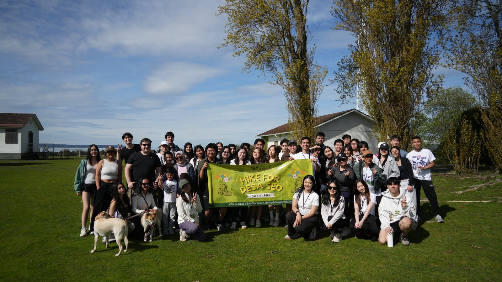
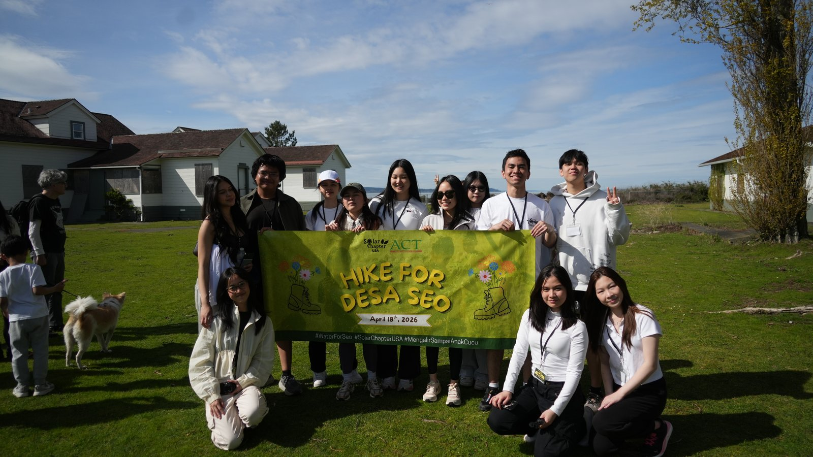

As Director of Marketing & Public Relations at Solar Chapter USA, I lead the storytelling and outreach behind a project working to expand clean water access for Desa Seo village and SMK Binauni school in Indonesia.
Solar Chapter USA is a nonprofit working to get clean water infrastructure to Desa Seo village and SMK Binauni school. As Director of Marketing & Public Relations, I'm responsible for how that mission reaches the people who can support it. For the full picture of the organization's work, visit solarchapter.com ↗.
I analyze campaign data to identify engagement trends and improve marketing performance, direct digital communications to support organizational initiatives and stakeholder engagement, and coordinate marketing projects with leadership to keep messaging consistent across teams.
Day to day, that means building out a content strategy across Reels, carousels, donation captions, and day-in-the-life posts — and making sure Solar Chapter's voice stays collaborative and community-centered rather than reading like a typical charity ask.
This is the project on my resume that feels the most personal — it's not just marketing metrics, it's clean water getting closer to a real village and a real school. Every post is an attempt to make that feel just as real to someone scrolling past it.
The content strategy leans on a mix of formats and a deliberately un-charity-like tone — plus a real-world fundraiser to back it up.
Reels, carousels, donation captions, and day-in-the-life posts, each suited to a different part of the story — from quick awareness to deeper context.
Refined Solar Chapter's tone to feel collaborative rather than charitable — casual, punchy, and centered on Desa Seo itself rather than the donor.
Organized a fundraising hike at Discovery Park, turning the campaign from purely digital into an in-person community event.
Our biggest event to date — a fundraising hike held in solidarity with those who have hard access to clean water. Held April 18th, 2026, it turned the campaign from a feed people scroll past into something they showed up for in person.

Our full group photo with everyone who showed up to hike in solidarity with Desa Seo.

Our officers — behind everything that made this event come together and succeed.
Embedded live from Instagram — click through for the full post.
Getting clean water closer to Desa Seo and SMK Binauni only works if enough people care to support it — that's the job this content is doing.